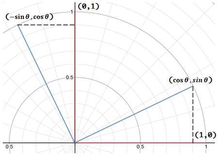

사설
회전 행렬(Rotation matrix)은 보통 한 번 구현해 놓고, 사용만 하기 때문에 좀처럼 외워지지 않았다. 특히 cos, sin의 위치는 기억해도 -가 어느 sin에 붙는지 자꾸 헷갈렸다.
그래서, 행렬식 자체를 외우기 보다 유도하는 방법을 외우기로 했다.
회전 행렬을 유도하는 방법에는 여러가지가 있다. 삼각형의 합동을 이용한 방법(고등수학), 벡터의 내적을 이용한 방법 등…. 이 방법들을 사용해도 전혀 어려울 것은 없지만, 팟 하고 떠올리기엔 조금 무리가 있다.
좀 더 쉬운 유도 방법을 찾아보니, 다행히 가장 쉽다고 할 수 있을 유도 방법이 존재했다. 바로 회전 행렬이 선형 변환(선형 사상)임을 이용해 유도하는 것이다.
선형 변환(Linear transformation)
두 벡터 공간 사이의 변환 \( f \)와 임의의 상수 \( c \), 두 벡터 \( \alpha \), \( \beta \)가 다음을 만족하는 경우, \( f \)를 선형 변환이라 한다.
- \( f\left( \alpha +\beta \right) =f\left( \alpha \right) +f\left( \beta \right) \)
- \( f\left( c\alpha \right) =cf\left( \alpha \right) \)
선형 변환을 만족하는 대표적인 변환이 바로 회전이며, 확대(Scaling), 찌그러트림(Shear), 대칭(Reflection), 사영(Projection) 등도 여기에 해당한다.
\( \theta \)만큼 회전하고 \( \omega \)만큼 회전하든, \( \omega \)만큼 회전하고 \( \theta \)만큼 회전하든, 그 결과는 \( (\theta + \omega) \)임을 생각해보면, 회전이 선형 변환임을 금새 알 수 있다.
참고로 이동(Translation)은 선형 변환이 아니다. 때문에 하나의 행렬로 변환을 표현하기 위해, 동차좌표계(Homogeneous coordinates)를 이용한 아핀 변환(Affine transformation)이 사용되는 것이다.
유도
먼저 기저 벡터인 \( ( 1, 0 ) \)과 \( ( 0, 1 ) \)를 \( \theta \)만큼 회전시켜 보자.  그림과 같이 \( ( 1, 0 ) \)을 \( \theta \)만큼 회전하면 \( ( \cos { \theta }, \sin { \theta } ) \), \( ( 0, 1 ) \)을 \( \theta \)만큼 회전하면 \( ( -\sin { \theta }, \cos { \theta } ) \)이 된다.
그리고, 회전 행렬 \( R \)은 선형 변환이므로 다음이 성립된다.
여기서 \( R (1, 0) \)과 \( R (0, 1) \)이 바로 \( ( \cos { \theta }, \sin { \theta } ) \), \( ( -\sin { \theta }, \cos { \theta } ) \)이므로, 대입하면 유도가 끝난다.
정말 쉽다.
3차원의 경우는 회전축에 대해 \( R \overrightarrow { v } = \overrightarrow { v } \)이므로 더 생각할 것도 없다.
같은 방법으로 \( { R }_{ x } \), \( { R }_{ y } \)도 쉽게 구할 수 있다.